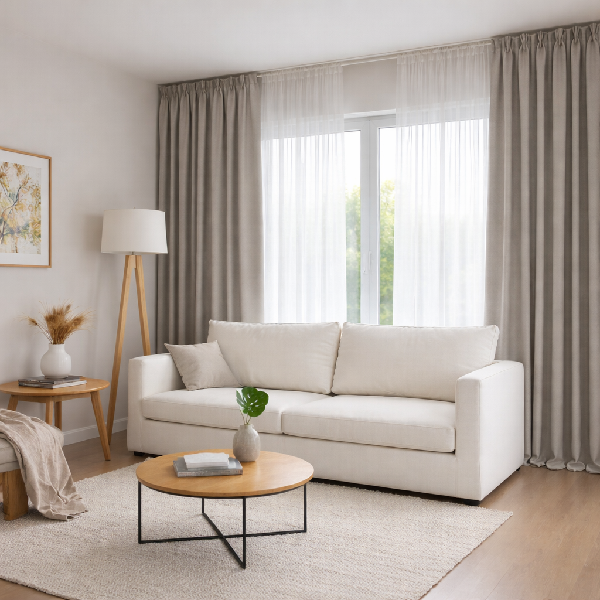
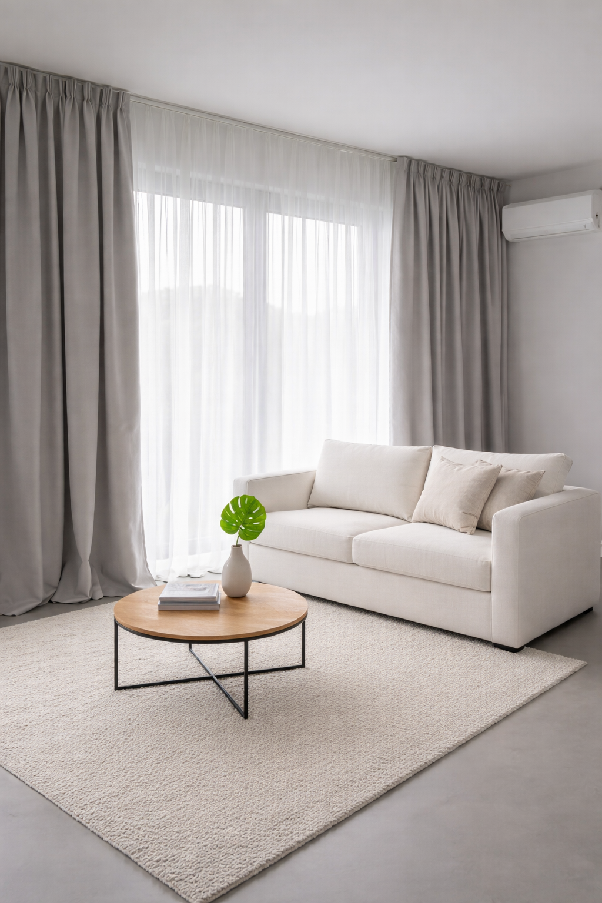

Cortinas a Medida
Confeccionamos cortinas personalizadas en el género que elijas, adaptadas a las dimensiones y características de cada ambiente. Fabricación propia y terminaciones artesanales.
ELEGIR GÉNERO
Confeccionamos cortinas personalizadas en el género que elijas, adaptadas a las dimensiones y características de cada ambiente. Fabricación propia y terminaciones artesanales.
ELEGIR GÉNERO
Ofrecemos un servicio integral con visita a domicilio para la toma de medidas e instalación opcional. Coordinamos cada etapa para que la cortina se adapte correctamente al ambiente.
PEDIR VISITA